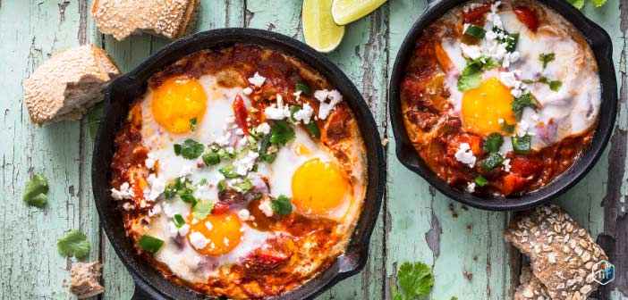

Shakshuka

Description:
Shakshouka (Arabic: شكشوكة : šakšūkah, also spelled shakshuka or chakchouka) is a Maghrebi dish of eggs poached in a sauce of tomatoes, olive oil, peppers, onion, and garlic, commonly spiced with cumin, paprika and cayenne pepper.
Ingredients for 2
- 2 Tbsp olive oil
- 6 large Eggs
- 1 Medium onion
- 4 cloves of garlic
- 2 Red capsicum
- 2 Yellow capsicum
- 1 can of tomatoes
- 1 Tbsp of Brown sugar
- Thyme
- Parsley
- Cumin
- 1/2 tsp of chilli powder
- Salt
- Pepper
Steps
- Heat olive oil in a large sauté pan on medium heat. Add the chopped Capsicum and onion and cook for 5 minutes or until the onion becomes translucent.
- Add garlic and spices and cook an additional minute.
- Add the brown sugar then Pour the can of tomatoes and juice into the pan and break down the tomatoes using a large spoon. Season with salt and pepper and bring the sauce to a simmer.
- Use your large spoon to make small wells in the sauce and crack the eggs into each well. Cover the pan and cook for 5-8 minutes, or until the eggs are done to your liking.
- Garnish with chopped Thyme and parsley.
Nutrition
CALORIES: 146KCAL | CARBOHYDRATES: 10G | PROTEIN: 7G | FAT: 9G | SATURATED FAT: 2G | POLYUNSATURATED FAT: 1G | MONOUNSATURATED FAT: 5G | TRANS FAT: 1G | CHOLESTEROL: 164MG | SODIUM: 256MG | POTASSIUM: 409MG | FIBER: 2G | SUGAR: 5G | VITAMIN A: 1371IU | VITAMIN C: 40MG | CALCIUM: 80MG | IRON: 3MG